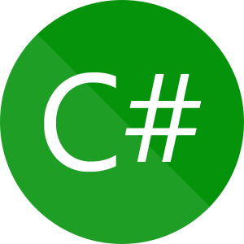
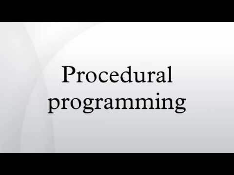
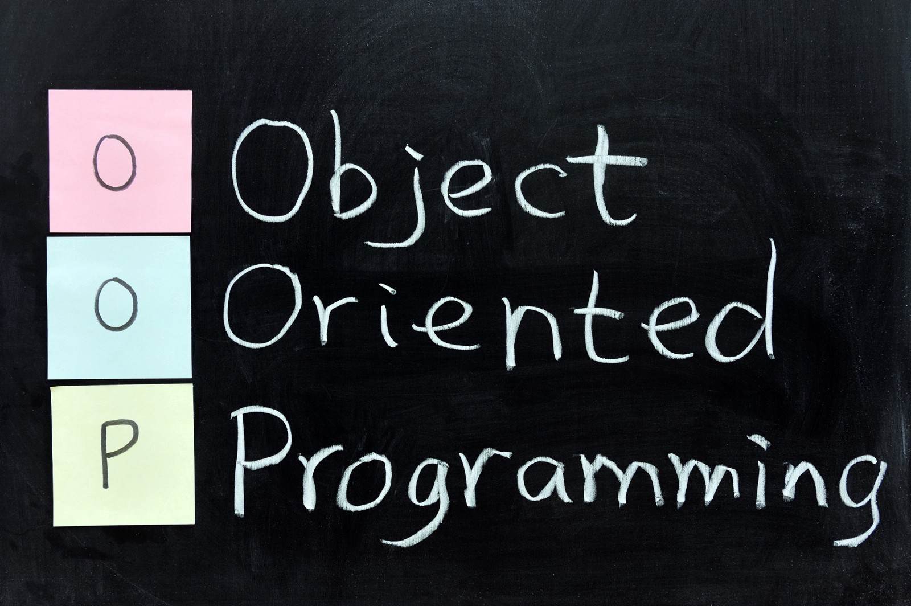

C Sharp (Γλώσσα Προγραμματισμού)
 Η C# (C Sharp, ελληνική προφ. Σι Σάρπ,) είναι μια γλώσσα προγραμματισμού Η/Υ. Δημιουργήθηκε απο την Microsoft μέσα από την πλατφόρμα .NET και αργότερα αναγνωριστηκε επισήμως απο την Ecma (ECMA-334) και την ISO (ISO/IEC 2327:2006). Είναι μια απ τις γλώσσες προγραμματισμού που δημιουργήθηκαν για την Common Language Infrastructure. O κύριος σκοπός της γλώσσας είναι να είναι απλή αντικειμενοστρεφής γλώσσα για γενική χρήση. Ο διοικητής της ομάδα που διαχειρίζεται την γλώσσα ονομάζεται Anders Hejlsberg. Στις 15 Αυγούστου 2012 κυκλοφόρησε η έκδοση 5.0 η οποία είναι η πιο πρόσφατη μέχρι σήμερα.
Ιστορία
Κατά την διάρκεια της δημιουργίας της πλατφόρμας .ΝΕΤ οι κλάσεις και οι βιβλιοθήκες γράφτηκαν χρησιμοποιώντας ένα compiler με το όνομα Simple Managed C (SMC). Τον Ιανουάριο του 1999 ο Anders Hejlsberg συγκρότησε μια ομάδα με σκοπό να φτιάξει μια καινούρια γλώσσα με όνομα Cool (C-like Object Oriented Language). Παρόλο που η Microsoft σκεφτόταν να κρατήσει το όνομα Cool σαν το τελικό όνομα της γλώσσας αυτό δεν έγινε ποτέ για λόγους πνευματικών δικαιωματών. Μέχρι τον Ιούλιο του 2000 όπου ανακοινώθηκε η πλατφόρμα .NET η γλώσσα είχε είδη μεταονομαστεί σε C# στην οποία αργότερα εισήχθησαν οι βιβλιοθήκες της ASP.NET. Ο James Gosling, (σχεδιαστής της Java) το 1994 μαζί με τον Bill Joy (συνιδρυτής της Sun Microsystems) αποκάλεσαν την C# απομίμιση της Java. Ο Gosling επίσης συμπλήρωσε οτι η C# είναι ίδια με την Java απλά χωρίς αξιοπιστία παραγωγικότητα και ασφάλεια. Οι συγγραφείς ενος βιβλίου της C# ισχυρίστηκαν οτι η Java και η C# ειναι πανομοιότυπες επαναληπτικές και χωρίς καινοτομίες. Τον Ιούνιο του 2000 ο Anders Hejlsberg υποστήριξε οτι η C# δεν είναι κλώνος της Java αλλά οτι είναι πολύ πιο κοντά στην C++. Από τότε που κυκλοφόρησε η δεύτερη έκδοση της C# το Νοέμβριο του 2005, η C# και η Java άρχισαν να απομακρύνονται η μία από την άλλη, με αποτέλεσμα όσο περνάει ο καιρός να μοιάζουν όλο και λιγότερο. Μια από τις πρώτες σημαντικές διαφορές ήταν στην υλοποιήση των generic objects. Η C# παρέχει "πρώτης-κλάσης" generic objects τα οποία μπορούν να χρησιμοποιηθούν σαν οποιαδήποτε άλλη κλάση, με τον κώδικα να εκτελείται κατά τη διάρκεια της φόρτωσής της. Αντιθέτως τα generic objects της Java παρέχονται από τη γλώσσα κατά τη διάρκεια της σύνταξής της και δεν επηρεάζουν τον ήδη υπάρχοντα κώδικα. Επιλέον η C# πρόσθεσε κάποια ακόμα χαρακτηριστικά στην τρίτη έκδοσή της, τα οποία επιτρέπουν στους προγραμματιστές να χρησιμοποιουν τεχνικές όπως τα closures. Η C# είχε κάποτε μια μασκότ που ονομαζόταν Andy (Αντι) σαν φόρος τιμης στον σχεδιαστή της, αλλά αποσύρθηκε στις 29 Ιανουαρίου του 2004.

| Programming Language | Position Jan 2013 |  |
|---|---|---|
| C# | 5 | |
| C | 1 |  |
| Java | 2 |